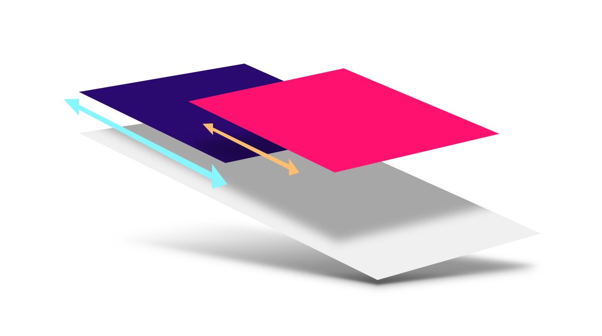
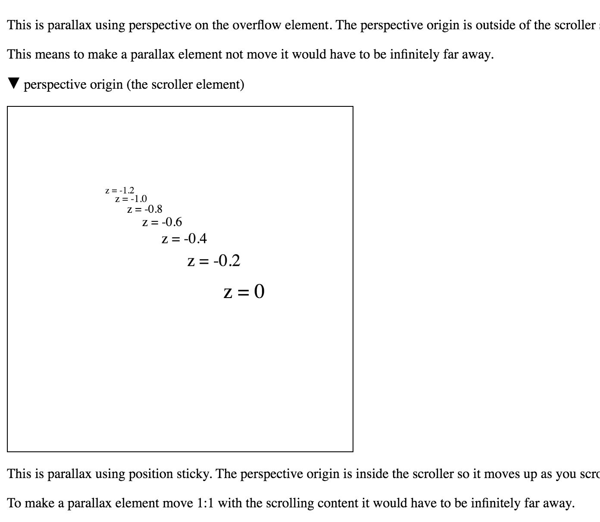

原文地址：https://developers.google.com/web/updates/2016/12/performant-parallaxing
原文标题：Performant Parallaxing
原文作者：Paul Lewis, Robert Flack
翻译：杜梦杰
示例：https://googlechrome.github.io/ui-element-samples/parallax/
明智地使用视差滚动效果，可以使你的web app更加精妙。但问题是实现高效的视差滚动是很有挑战性的。本文中我们会讨论一个既高性能又可以跨浏览器工作的解决方案。

TL;DR
- 不要使用滚动事件
scroll events或者背景位置background-position来实现视差滚动动画。 - 使用三维变形
CSS 3D transforms创造更加精准的是视差效果。 - 对于移动版Safari浏览器使用
position: sticky属性确保视差效果被正确传递。
如果你想要一个开箱即用的解决方案，请前往UI Element Samples GitHub repo并阅读Parallax helper JS。在这个仓库里可以看到一个在线的demo。
有问题的视差滚动
首先，我们来看一下两种最常见的实现视差效果的方法，并着重了解为什么它们不适合用来实现视差滚动。
Bad: 利用滚动事件
视差滚动的核心要求是滚动配对scroll-coupled：每当页面的滚动位置scroll position改变，元素的位置都要更新。尽管听起来很简单，但是现代浏览器的一个重要机制就是异步工作work asynchronously。这个机制对于滚动事件也适用。在大多数浏览器中滚动事件都是以最好性能best effort为原则来进行传递的，并不保证在滚动动画的每一帧都会进行传递！
通过这一关键信息我们可以知道，对于根据滚动事件来移动元素的情况，要避免使用基于JSJavaScript-based的解决方案：JS并不保证视差滚动与页面滚动位置同步。在旧版本的移动版Safari中，滚动事件是在滚动结束时才进行传递的，这样根本不可能实现基于JS的滚动效果。在最新的一些版本中滚动事件确实是在动画过程中传递的，但与Chrome类似，是基于最好性能best effort原则的。一旦主线程繁忙，滚动事件就不会立刻传递，这就意味着视差效果将会被破坏。
Bad: 更新背景位置
我们要尽量避免的另一种情况是每一帧都渲染。有很多方法试图改变背景图片位置background-position来实现视差效果，这样会导致浏览器在滚动时重绘页面的相关部分，这是非常耗费性能的，会对动画造成明显的破坏。
如果想要保证视差滚动，我们需要一些不依赖于滚动事件的动态属性accelerated property。
CSS 3D
Scott Kellum和Keith Clark在使用CSS 3D实现视差滚动方面卓有成就，他们使用的方法如下：
- 将要滚动的容器元素属性设置为
overflow-y: scroll（和overflow-x:hidden）。 - 对同一个元素应用
perspective值，并将perspective-origin设置为top left或0 0。 - 对容器元素的子元素应用Z轴变形，通过缩放子元素实现视差效果，注意不要影响到它们在屏幕上的大小。
这种实现方式的代码如下：
|
对应的HTML如下：
|
调整缩放以符合透视
将子元素向后推会使其在透视上占的比例更小。我们可以用（透视距离-移动距离）/ 透视距离(perspective - distance) / perspective这个公式计算出元素需要放大多少。我们需要让元素视差滚动但是还要保持大小，所以需要将其以这种方式缩放，而不是置之不理。
在上面的代码中，透视距离是1px，视差子元素的Z轴透视距离是-2px。这样的话元素需要放大三倍，正如代码中所写的：scale(3)。
对于任何没有应用translateZ值的内容，其移动距离可以用0来代替。就是(perspective - 0) / perspective，其值为1，既不放大也不缩小。
工作原理
理解这种方法的原理很重要，因为我们马上用到这些知识。滚动实际上也是一种变换transform，这就是为什么滚动可以被加速；它主要涉及到改变GPU周围的层。在典型的滚动中，即不涉及透视，滚动元素和和它的子元素的改变是1:1的。如果一个元素向下滚动300px，那子元素向上变换同样的值300px。
但是，对滚动元素应用透视值扰乱了这个过程；它会改变滚动变换的基础矩阵。滚动300px距离可能子元素只会移动150px，取决于你设定的perspective和translateZ值。如果某元素的translateZ值是0，那它就会以1:1的比例滚动（正常模式），但是在Z轴上远离透视原点的子元素会以不同的比率滚动！这样就产生了视差滚动。非常重要的是，这一过程作为浏览器内部滚动机制一部分自动处理，无需监听滚动事件或改变背景位置。
美中不足：移动版Safari
每种效果都有需要注意的地方，对于变换而言，一个重要注意事项是关于保护子元素的3D效果的。如果在透视元素和它的视差子元素之间的层级内有其他元素，那么3D透视将被“展平”flattened（降维打击😶），意味着效果将丢失。
|
在上面的HTML中，.parallax-container是个新元素，它实际上会展平perspective值，使视差滚动失效。大部分情况下，解决方案相当直接：为元素添加transform-style: preserve-3d属性，使其能传递任何已应用于DOM树中的3D效果。
|
但是在移动版Safari上，情况就有些复杂了。为容器元素应用overflow-y: scroll技术上是可行的，但要以牺牲滚动元素为代价。解决方法是添加-webkit-overflow-scrolling: touch，但这也会展平perspective，得不到任何视差效果。
从渐进增强的角度来看，这可能不是什么大问题。如果某些情况下不能视差滚动，我们的应用仍然可以正常工作，但如果能找出一个解决方案也是很好的。
救世主来了position: sticky！
position: sticky（还没有标准的中文译名，本文统一翻译成粘性定位）属性允许元素在滚动时附着在视口或给定元素的顶部。这个属性和大多数position属性一样很笨重，但是却有一个很好的点：
粘性定位的元素与相对定位的元素定位方式类似，但是其偏移量是以最近的有滚动框的祖先元素为参照的，如果祖先元素都没有滚动框则以视口为参照。-CSS Positioned Layout Module Level 3
乍看之下好像没什么用，这个信息的关键就在于对元素stickiness计算的解读：“其偏移量是以最近的有滚动框的祖先元素为参照的”。换句话说，粘性定位元素的移动距离（使其附着在其他元素或视口上的距离）是在其他变换执行之前就计算好的，而不是之后。这就意味着，就像之前的例子一样，如果计算出的偏移值是300px，就有机会通过使用透视（或任何其他变换）在应用到元素上之前处理偏移值。
通过为视差滚动元素应用position: -webkit-sticky属性，可以有效的逆转-webkit-overflow-scrolling: touch的展平效果。这保证了视差元素会以最近的具有滚动框的祖先元素作为参照，本情况下是.container元素。然后，和之前类似，.parallax-container元素应用perspective值，这会改变计算出的滚动偏移值并创造出视差效果。
|
这样移动版Safari上也可以实现视差滚动了，确实是个好消息！
粘性定位注意事项
有一点需要注意的是：position: sticky确实改变了视差的机制。粘性定位试图将元素附着在滚动容器内，而非粘性定位则不会这样。这意味着通过粘性定位实现的视差滚动和非粘性实现的视差滚动是完全相反的：
- 有
position: sticky属性，元素离z=0越近，移动的越少。 - 没有
position: sticky属性，元素离z=0越近，移动的越多。
如果有点难理解，可以看一下Robert Flack的这个demo，展示了有无position: sticky的元素行为上的差异。要看出效果需要使用Chrome或Safari。

BUG和解决方案
与任何事情一样，仍有许多小问题需要处理：
- 各浏览器对粘性的支持性不一致。Chrome是支持的，Edge完全不支持，在Firefox上，当粘性定位和透视变换
perspevtive transform组合使用时有渲染bug。如果需要的话，增加一句额外的代码position: -webkit-sticky就能解决移动版Safari的兼容问题，性价比还是很高的。 - 视差效果在Edge里不会执行。Edge浏览器在OS层来处理滚动，这通常是个好事，但是在这种情况下则阻止检测到滚动中的透视变化。可以加一个固定定位元素来修复，参考这篇文章。
- 页面体积变得太大了！许多浏览器在计算页面体积时会考虑到缩放，但可惜的是Chrome和Safari并没有考虑到透视。所以如果元素被放大了三倍，即使在经过透视处理后其实没有放大，你也会看到滚动条。这个问题可以通过将元素的变形原点放到右下角
transform-origin: bottom right来解决， 原理是元素放大的部分进入到了滚动区域负区域negative region内（通常实在左上方），滚动区域是不会看到负区域的内容的。
总结
如果能合理的使用的话，视差滚动其实是个非常有趣的特效。如你所见，我们可以高性能、跨浏览器地将其实现。由于视差滚动需要一点数学知识和少量的模板来得到想要的效果，我们为你们打包好了一个帮助库和示例，链接在这里 UI Element Samples GitHub repo。